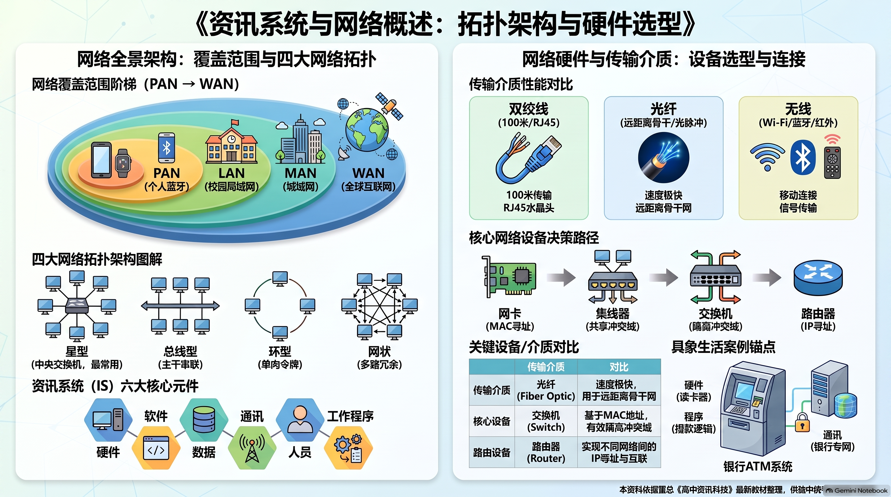
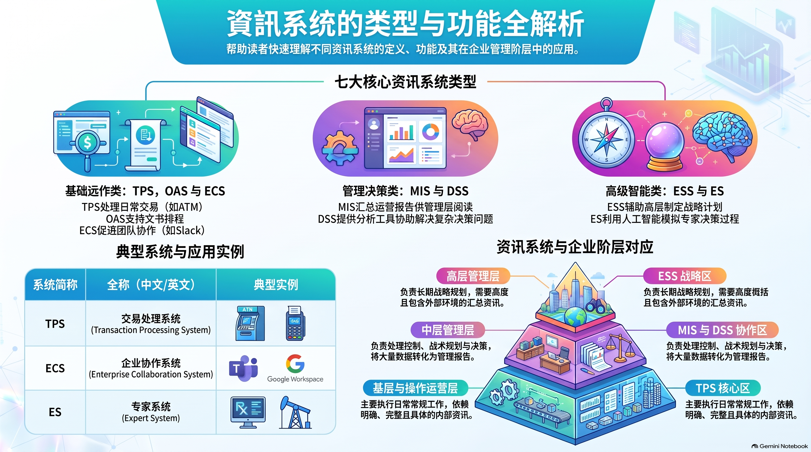

🎯 一、 单元教学与复习目标导航
1.1 课程标准核心素养
依据董教总华文独中工委会统一课程委员会《资讯科技课程标准》，本章旨在引导学生建立对企业级资讯系统与现代计算机网络生态的全局理解：
- 资讯系统组成与架构思维：掌握资讯系统的六大组成元件（硬体、软体、数据、人员、过程、通讯），理解通讯在现代分布式企业中的关键纽带作用；
- 业务流程建模与自动化能力：精通交易处理系统（TPS）的核心机制，熟练推导超市 POS 收银系统的 8 步规范业务算法；
- 企业分层信息架构认知：清晰辨析 TPS、OAS（办公室自动化）、MIS（管理资讯系统）与 DSS/ESS（决策支援）的分工与协同；
- 网络社会影响与电商经济模式：深刻理解计算机网络对社会的五大正面赋能，熟练掌握电子商务五大经典模式（B2B, B2C, C2B, C2C, O2O）的运作机理与典型实例。
1.2 师生教学达成清单 (Checklist)
📖 二、 课本官方中英对照核心术语速查表
（严格依据董总《高中资讯科技第 1 册：中英名词对照表》收录归纳）：
| 中文术语 | 英文术语 | 课本核心概念阐释 |
|---|---|---|
| 资讯系统 / 信息系统 | Information System (IS) | 由人、硬件、软件、数据和网络组成的有机整体，用于收集、处理、存储和分发信息以支持决策和控制。 |
| 交易处理系统 | Transaction Processing System (TPS) | 负责记录、处理和追踪企业日常底层例行业务交易的基础核心系统（如超市 POS、ATM 机）。 |
| 销售点系统 | Point of Sale System (POS) | 部署在商品零售结算前台，集条码扫描、库存扣减、金额计算与票据打印一体的交易终端。 |
| 办公室自动化系统 | Office Automation System (OAS) | 运用计算机与网络技术协助办公人员数字化处理文档、安排日程、收发邮件和协同会议的系统。 |
| 管理资讯系统 | Management Information System (MIS) | 将底层日常数据进行汇总统整，定期生成结构化管理报表，辅助中层管理者监督与控制的系统。 |
| 决策支援系统 | Decision Support System (DSS) | 结合高级数据分析模型与专业数据库，辅助高层管理者针对非结构化复杂问题进行方案比对与决策的系统。 |
| 主管支援系统 | Executive Support System (ESS) | 专为最高层决策者设计，通过仪表板图形化展示宏观全局关键绩效指标（KPI）与外部战略情报的系统。 |
| 电子健康记录 | Electronic Medical Record (EMR) | 医疗机构以数字化形式系统记录和永久保存的患者个人病历、检验报告与诊疗历史。 |
| 电子商务 | Electronic Commerce (e-Commerce) | 依托互联网和现代通信技术，在全球范围内进行的有形商品与无形服务的商业在线交易模式。 |
| 企业间电子商务 | Business-to-Business (B2B) | 企业与企业之间通过网络开展批量物资采购、供应链数据协同与资金结算的商业模式。 |
| 企业对消费者电子商务 | Business-to-Consumer (B2C) | 生产或零售企业直接借助互联网商城向个人最终消费者在线销售商品或提供服务的零售模式。 |
| 消费者对企业电子商务 | Consumer-to-Business (C2B) | 个人消费者通过网络汇聚集体购买需求（团购），向企业发起反向议价与个性化定制的模式。 |
| 消费者对消费者电子商务 | Consumer-to-Consumer (C2C) | 个人消费者之间借助网络中介平台进行闲置物品转让、二手拍卖或微型服务的商业模式。 |
| 线上到线下商业模式 | Online-to-Offline (O2O) | 消费者在移动端线上下单支付，并前往线下实体店消费或由骑手配送上门的本地生活商业模式。 |
💻 三、 5.1 初识资讯系统 (Introduction to Information Systems)
(1) 资讯系统的六大组成元件

董总新课本指出，现代企业级资讯系统由六大要素紧密啮合构成：
- 硬体 (Hardware)：计算机主机、服务器、扫描枪、条码机、触控屏、网络设备等物理装置；
- 软体 (Software)：操作系统、数据库管理系统（DBMS）以及各类针对性应用软件；
- 数据 (Data)：系统中流转流淌的原始事实、库存数字、顾客信息、交易日志；
- 人员 (People)：系统设计员、程序开发者、系统管理员以及最终操作系统的普通员工与客户；
- 过程 / 流程 (Procedures)：指导数据录入、系统操作、异常处理、故障应对的操作规程与制度；
- 通讯 / 网络 (Communication / Network)：负责不同设备、各分行与数据中心之间数据传输的通道。
💡 课本核心思辨题（学习评量 5.1 第 9 题）：
问题：“为什么独立运行的电脑没有联网也能跑软件，现代资讯系统却必须将‘通讯’归为核心元件？”
权威解析：严格来说，孤立的单机资讯系统确实能离线运行。但现代商业社会高度互联，不具备通信能力的独立设备极难发挥规模商业价值。尤其是拥有连锁分店或跨地域的企业，高度依赖网络进行即时库存调配、集中财务结算与协同办公，通讯为企业带来了无可估量的效率增益，因此通讯被列为必不可少的六大支柱之一。
(2) 交易处理系统 (TPS) 与超市 POS 结账 8 步规范算法流程（统考经典必考）

董总课本与官方参考答案完整收录了超市前台收银 POS 系统的规范操作算法流程：
- 步骤 1：扫描货品二维码或条形码，系统自动检索数据库并获取商品售价；
- 步骤 2：若该商品有促销折扣，则进行折扣金额计算；否则维持原售价；
- 步骤 3：将该商品单价乘以购买数量，计入当前购物车累计金额；
- 步骤 4：若尚有未扫描货品，循环返回步骤 1 继续录入；否则跳至步骤 5；
- 步骤 5：结算并汇总该顾客购买的所有货品总金额；
- 步骤 6：向顾客提示应付金额并收取款项；
- 步骤 7：
- 若为现金付款，收取现金；若实收现金大于应收总数，计算并退还找零差额；
- 否则若为电子支付（如二维码/电子钱包），使用扫描设备扫描或输入交易识别码验证扣款；
- 步骤 8：驱动打印机列印交易纸质或电子收据单据，完成交易并清空购物车缓存。
(3) 交易处理系统 (TPS) 为现代企业带来的四大核心价值

- 准确性 (Accuracy)：条码扫描与计算机算法自动计算，极大减少收银员口算、手工输错找错的人为失误；
- 高效率 (Efficiency)：批量扫描结算秒级完成，大幅缩短顾客排队等待时间，加速库存周转；
- 压力低 (Low Stress)：将繁琐重复、精神高度紧绷的算账工作交给电脑，显著减轻基层员工工作压力，提高生活品质；
- 满意度 (Customer Satisfaction)：流畅无误的购物体验提升了顾客好感，为企业赢得良好商业口碑与更高营业额。
(4) 组织级资讯系统金字塔与办公室自动化系统 (OAS)

- OAS 的全员普及性（学习评量 5.1 第 7 题）：
- OAS（如文档套件、视讯会议、协同排程软件）绝不仅限于基层数据录入员工使用！
- 跨地域分布的管理层高度依赖视讯会议（Zoom/Teams）召开跨国跨区分行例会；中高层主管也需要借助项目管理软件（Trello/Asana）进行进度追踪与资源调度，因此 OAS 是贯穿企业所有层级的协同底座。
- 医疗 EMR 与专家系统功能：模拟专科医生做辅助诊断、自动更新病人电子病历、自动检测危险指标发出预警、结构化归档呈现历史检验报告。
🌐 四、 5.2 网络发展与电商应用 (Network Applications & e-Commerce)
(1) 网络对社会的五大正面影响（董总参考答案黄金采分点）

- 讯息普及与民主化：打破了传统权威和少数媒体的资讯垄断，使多元观点自由流动，促进社会公平、公共参与和民主决策；
- 文化交流与全球化：跨越国界让不同民族文化（节日庆典、历史传统、旅游美食）互通共享，增进全球文明相互理解与包容；
- 社交网络与社区建设：打破时空壁垒，帮助人们维系远方亲情友情，支持社区邻里事务共商，增强人际连接；
- 教育与科研的促进：海量开放课程（MOOC）与数字化文献库支持终身学习与学术民主化，加速跨国科研协同；
- 商业发展与经济创新：催生电子商务与全球化供应链，降低创业门槛，激发灵活就业与新业态涌现。
(2) 社交平台在日常生活中的三大维度价值

- 垂直兴趣圈层：如 Facebook“羽你同行”羽球社群，爱好者汇聚交流战术技巧与最新赛事比分；
- 二手在线交易平台：如 Facebook Marketplace，用户自主发布闲置物品，实现社区就近交易；
- 职场人脉与猎聘平台：如 LinkedIn，搭建专业职场履历，建立行业专家关系网络，寻找高端职业发展机遇。
(3) 电子商务 (e-Commerce) 五大模式全景精讲与考点博弈矩阵

| 模式类型 | 英文全称 | 核心交易主体关系 | 商业本质与博弈特征 | 董总课本收录典型实例 |
|---|---|---|---|---|
| B2B | Business to Business | 企业 与 企业 | 供应链上下游批量采购、大宗贸易；讲求账期与长期系统互联。 | 阿里巴巴 (Alibaba.com), TradeKey |
| B2C | Business to Consumer | 企业 对 个人消费者 | 在线零售业主流，企业直接面对终端买家；消费者个体议价能力弱。 | Lazada, Shopee, Amazon |
| C2B | Consumer to Business | 消费者 对 企业 | 逆向团购议价；消费者集合庞大需求，反向迫使企业让利降价，地位更平等。 | 天猫聚划算 / 团购定制平台 |
| C2C | Consumer to Consumer | 个人消费者 间 | 个人与个人间闲置拍卖、跳蚤市场交易；由第三方平台提供支付担保。 | Lelong.my, eBay, 闲鱼 |
| O2O | Online to Offline | 线上下单 → 线下履约 | 将移动互联网与实体店铺结合，线上引流锁客、线下到店体验或即时配送。 | FoodPanda, GrabFood |
(4) 为什么同类资讯系统（如各校图书管理系统）架构大相径庭？（课本高阶思维题）

董总课本深入指出了决定软件系统定制化差异的三大客观动因：
- 各机构政策与运营模式差异：每一所学校图书馆的借阅制度、馆藏流转规程各不相同，系统工作流必须严格依规量身定做；
- 实际功能需求范围的不同：有的学校仅需基础条码借还，有的名校则要求整合 RFID 门禁、电子文献检索、跨馆际互借等多维模块；
- 资金预算与开发投入规模：资金充裕的机构能够采购大型定制化商业系统，而预算有限的机构则倾向选择功能简练的标准轻量软件。
(5) 现代智慧物流与供应链管理中的网络协同

在现代电子商务生态中，网络不仅连接买卖双方，更深度渗透至物流履约链路：RFID 无线溯源、GIS 路径智能规划与无人仓储分拣系统在网络实时协同下高效运作，实现商品秒级出库与分钟级定位追踪。
🗺️ 五、 配套全景考点图谱与思维导图
基于 NotebookLM 与董总官方大纲精炼的资讯系统与网络概述全景图谱，点击图片可全屏高清放大：

📌 第 5 章 资讯系统与网络复习笔记图谱 · 点击放大

📌 资讯系统与网络架构综合指南 · 点击放大

📌 资讯系统的类型与功能全景图 · 点击放大
⚡ 六、 师生考前 3 分钟极速速记卡
六大元件硬体 + 软体 + 数据 + 人员 + 过程 + 通讯 (现代企业协同生命线)
POS 八步算法扫码查价 → 折扣运算 → 累乘数量 → 循环录入 → 结算总计 → 提示应收 → 找零/扣款 → 打印收据
TPS 四大红利准确性 (防错防漏) · 高效率 (极速吞吐) · 低压力 (赋能员工) · 满意度 (口碑增收)
系统金字塔基层作业 TPS → 协同办公 OAS → 中层战术 MIS → 高层战略 DSS / ESS
网络五大赋能资讯普及民主化 · 跨国文化全球化 · 社区社交连接化 · 科研教育开放化 · 商业经济繁荣化
电商五大模式B2B (企业间大宗批售) · B2C (零售商城直销) · C2B (消费者团购逆向议价) · C2C (个人二手拍卖) · O2O (线上下单实体履约)
架构差异三因业务政策差异 · 实际功能需求范围 · 开发资金预算规模
📝 七、 互动题库与全景智能评测系统
卷A基础 · 卷B进阶 · 模拟卷
严格对接董教总《资讯科技》第5章课程标准与 2026/2027 统考新规范，收录 80 道全真单项选择题（每 10 题一组分页自测，即判即析并展示教师核心考点）以及 15 道情境综合作答题（包含独立小问卡片与评分量规）。
3
套完整自测试卷
80
道全真单选题（即判即析）
15
道情境作答题（配量规）
10题/组
科学分页自测控制